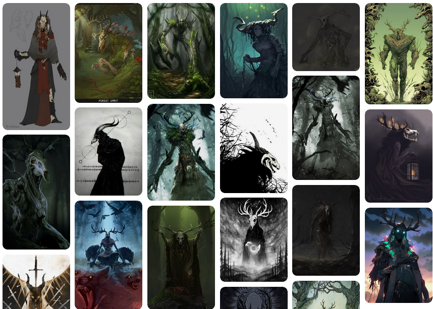

Derek Baert | Game Designer and Programmer

Rift City Rebels is a Platform Fighter developed as the capstone project for my Game Development program. Inspired by the Smash Bros. series and Rivals of Aether, our goal was to use these as a template to create a fun and polished gameplay experience. My primary contributions were:
-
Created one of the game's playable characters, including the concept for their visual design, as well as designing their 9 unique abilities.
-
Designed and Developed the game's camera system, which dynamically adjusted it's position and zoom to frame the combat for up to 4 players.
-
Designed and Developed the game's Data Management system, which tracked player selections such as stages and characters, as well as in match statistics for each player. These stats were then displayed for each player at the end of each match.
-
Designed and Developed the game's Data Management system, which tracked player selections such as stages, game modes, and characters, as well as in match statistics for each player. These stats were then displayed for each player at the end of each match.
-
Developed a training mode that allowed players to adjust AI behaviour, and dynamically swap between all 7 playable characters to test out their unique moves.
-
Adjusted game balance based on playtest data, including AB testing and detailing changes in bi-weekly patch notes.
Read on for more detailed information on these contributions!
Initial Concept
For this project each programmer teamed up with an artist who was interested in character art. For the other characters, the artist came up with the visual and narrative concept for the character, while the programmer handled any special implementation the character required. I had a very strong idea for a heavy, nature themed character wearing a skull mask with a moveset inspired by wrestling and championed the idea. Luckily one of the artists was interested in the idea and volunteered to pair up with me.
Character Design Sheet
Visual Design
To properly convey the idea I had, I created a mood board of reference photos to share with the artist. The artist created some silhouettes based on the reference photos, and after some revisions we eventually settled on one that would fit the heavy hitting playstyle we were going for. To connect his nature theme with his martial arts focused moveset, we wrapped Muay Thai rope inspired vines wrapped around his hands and feet.
Snippet of the mood board used for reference.
Early silhouettes for Warden.

Final character render
Moveset
For his moveset, we came up with a short list of wrestling moves and matched them to the input that we thought would be the best fit. To tie in his nature theme, we added a few attacks that used vines he could summon from his hand or the ground. I then researched the frame data for similar attacks in existing fighting games to determine the best starting point for the animations and compiled this on his design sheet. As the game was developed, these values were adjusted as needed.
Early ability sheet for Warden.
Example of attack breakdowns.
One system I developed was the in-match camera. As there are multiple players moving around the screen during a match, this system needed to move the camera to follow the action of the match, zoom in and out to fit all characters on screen, and constrain the camera to the bounds of the level. Below I will cover how I tackled these behaviours.

Dynamic Zoom
To fit all characters on screen, the camera needs to zoom in when characters are close together and zoom out when they are far apart. First, I needed to figure out what the furthest distance between any two players was. To do this, the camera’s script loops through an array of all the players and checks the distance between each player. If this value exceeds the current value of the “CurrentDistance” local variable, it is assigned as the new value of CurrentDistance. Once the loops complete, the value of CurrentDistance is returned.
Function calculating the largest distance between all players.
Once I determined the largest distance between two players, I needed to set constraints on how far the camera would be allowed to zoom in or out. Since the two stages in our game varied in size, I created two adjustable instance variables for level designers. These variables defined the minimum and maximum distances between players before the camera stops zooming in or out. Using these two variables, I was able to map the maximum distance between players to a value between 0 and 1, with 0 being the Minimum player distance, and 1 being the maximum player distance. This value is clamped at 1 to prevent the camera zooming out further than intended. This value is then stored as a variable called ZoomAmount.
Mapping the highest distance between players on a scale of 0 to 1.
To adjust the ‘zoom’ of the camera, I attached a spring arm component to the camera which shortens and lengthens to pull the camera in and out. Similar to how I determined the minimum and maximum player distance, I set up instance variables for the constraints of the arm length so that it could be set per stage. Now, using the ZoomAmount value from earlier, I used a Lerp function to find the corresponding value between the minimum and maximum arm lengths, and set it as the spring arm’s current length with an FInterp function. This function smoothly changes the value of a float to a target value each frame, in this case changing the spring arm’s current length to the newly calculated length.
Mapping new arm length within range, and then setting new arm length smoothly over time.
Tracking Movement
Now that the distance from the stage is found, the camera also needs to track the position of the players. To do this, I needed to find the center point of all players in the match and smoothly move towards it. To calculate this, as all that needs to be done is adding all player positions together and then dividing by the player count.
Calculating centre point of all players.
But what happens when one of the players is knocked out of bounds? The camera will move to follow them, potentially moving too far away from the main play area. Initially I tried setting up static boundaries for the camera, but this wouldn’t work with a camera that was frequently pulling in and out. To fix this, I needed to find a way to adjust the boundaries based on how far the camera was pulled in or out. Using the ZoomAmount I calculated earlier, I calculated new boundaries for the camera. First, I set up two collision boxes that represent the bounds for the camera when it is fully zoomed in and out. Like with the previous instance variables, these can be adjusted manually to fit the needs of the given level.
Collision boxes used to for the minimum and maximum constraints of the camera.
With these set, I took the X and Z bounds of each collision box as the start and end values for lerp functions, and used the ZoomAmount as the Alpha to find the corresponding value between them. With the results of these two Lerp functions, I created new boundaries to constrain the camera’s position by clamping its X and Z values.
Calculating new boundary for camera based on its current zoom value.
Clamping position to new boundary.
Finally, I smoothly moved the camera’s position to this constrained value using a VInterp function, which functions like the FInterp function used for the zoom.
Setting new camera position smoothly over time.
Another feature I worked on was integrating the cinematic sequences that would play at the character select screen and the results screen after a match. This system needed to play the correct sequence for the character, as well as reflect which colour scheme the character was currently using. I experimented with several different approaches to this problem before finding the one that worked the best for our project. This required a bit of creative problem solving and collaboration with artists to find the best method to display their art and animations

The finished character select screen with animations.
Character Select and Victory Animations
First Attempt
For the animations on the character select screen, we initially explored creating virtual green screen, with the selected character being spawned in front of a solid colour. A camera would then capture them doing their entrance animation and render it to the UI. This worked, but didn’t look very good, so we scrapped it. Instead, I set up a scene with a 3D UI behind it. To do this, I made an actor with the 3D UI component on it, and placed four skeletal mesh components in front of each character select section. When a character is selected, it triggers an event which this actor subscribes to. The actor then checks which player it was that triggered the event using their Controller ID and finds the skeletal mesh that corresponds to their slot.
Skeletal meshes arranged in front of character select UI.
Code snippet for finding the skeletal mesh for the correct player.
To determine which mesh corresponded to which character, I created a map using the character’s class as the key, and the value is a struct containing their Name, Skeletal Mesh, and Animation.
Example of the data contained in the struct.
Before setting the player’s mesh and playing their entrance animation, I ensure the mesh is not visible, then make it visible after setting everything up. This was done because there were a few frames before the animation started where the mesh was visible in it’s default pose.
This system worked fine initially, but we ran into problems for characters with multiple meshes, such as weapons and other props. There were also certain visual effects the artists wanted to implement with the character’s textures, which would have been difficult to pull off with this method. So, I revised the system to use Unreal Engine’s Cinematic Sequences.

Code snippet showing the mesh being changed and the animation being played.
Second Attempt
The meshes were still useful, as they could be used to determine where on the screen to place the sequence. So, after determining which mesh to use, I used a Map to locate which sequence to play for the selected character. Similar to the map in my initial attempt, it used the character’s Class as the Key, and the sequence as the value.

The data stored in the map for the character sequences.
Once the correct sequence was located, I called the Unreal function “Create Level Sequence Player” to spawn the sequence player, providing it with the character’s sequence, and the desired settings. In this case, because I needed to make some adjustments to the sequence before it plays, I set auto-play to off. I also store the sequence as a local variable (Current Sequence) for easier referencing later.
Code snippet showing the level sequence being spawned.
The first adjustment is setting the position of the sequence to the position of the mesh in the 3D scene. To do this, I had to set the value of the sequence’s “Override Instance Data” variable to true, to override the transform. I then change the X and Y values of the DefaultLevelSequnceInstanceData, an object containing all the instance’s default data.
Code showing the position of the level sequence being dynamically changed.
Next, I play the sequence, and store the sequence in a map, using the player’s Controller ID as the key. This way, if they deselect the character, I can locate and remove the sequence, clearing up the space in front of their character select section for when they select a new character.
Code showing the sequence being played and stored for reference later.
Lastly, I needed to make sure that the correct materials are applied to the character spawned by the sequence. To account for multiple players selecting the same character, we created alternate colours which were assigned to the duplicate selections. To do this, I iterated through the bindings of the sequence being played, then iterate through the objects within each binding, to find which is the SkeletalMeshActor used in the sequence by attempting to cast the bound Object as a SkeletalMeshActor.
Code showing the bindings being iterated through.
Code showing the objects within each binding being iterated through.
If the cast succeeded, then I check the character’s class defaults for which material to use, using an index created to track which material to use for the character, then set the material and overlay materials. Unreal shows a warning as changing these class defaults could cause problems, but referencing them like I am is safe.
Code showing the materials of the skeletal mesh actor being adjusted during runtime.
As each character had different technical art needs, not all used a SkeletalMeshActor in their sequence. For these, the cast would fail. When this happens, I check if the object is instead an instance of the character class. If it is, then I call a function on their class for setting the material, which sets the materials within the actor.
Code showing the changing of a character's materials.
Function in character class for changing materials.
Lastly, once specific character used a Static Mesh for their sequence, so I did one final check for that, adding in a second check to make sure it was for their character specifically.
Code for adjusting materials on a static mesh actor.
A similar process was used for the winning character’s sequence on the post match results screen, however those sequences only used instances of the Character’s class, so we only needed to cast for that object in the bindings.
Code showing the material being adjusted on the post match results screen.
A major system I worked on for this project was the Game Manager systems, or 'Game Modes' in Unreal Engine. Game Modes oversee the game state at each stage, defining and implementing the rules of the game. These tracked all data related to player choices, such as the characters they selected and the stage they selected, as well as their in-match statistics, such as how many knockouts they received, and how much damage they received or dealt.

Post match results screen showing each players stats for the match.
Tracking Player Selections in the Menu
To track this data, I created a struct to store all relevant values, then created Map in each Game Mode using each player’s controller ID as the key, and this struct as the value.
Struct for tracking player data.
The Menu Game Mode subscribes to an event in the character Select UI which triggers whenever a character is selected. The Game Mode then updates the entry for the player controller with the selected character’s class. This data will then be used when the players load into the level to spawn their selected character, as well as assign it to the correct player.
Code for adding a player's data to the Map of structs.
A similar process is used when selecting a level. The event triggered provides an integer ID for the selected level, which is used to determine the level to load, as well as its music track. Each artist did a different lighting pass on one of the levels, so a random variant of the chosen level is selected from an array of the level file names and stored for later. The music track for the stage is passed to the Game Instance, an object that persists as long as the game is running. This can be used to pass data between the different game modes, as game modes do not persist when loading a new stage.
Code for tracking level selection.
Another choice that I needed to track was which Game Mode to load when starting a match. Our game had two main match types: timed matches, and stock matches, both with their own unique game modes. These are chosen on the character select screen using a toggle, so I used Unreal’s built in Flip Flop node to swap between the two modes, and tracked the currently selected mode with a custom EGameType enumerator for each game mode type. An event dispatcher is then called which the UI subscribes to so that it updates to display the correct mode.
Code for tracking Game Mode.
To set the game mode for a level when you open it, you set it using the optional pin “Options,” which accepts a string. For example, if using the Timed Match game mode, the string would be: “?Game=/Game/Core/GameModes/GM_TimedMatch.GM_TimedMatch_C”. To set this, I use a Switch node with the EGameType enumerator to determine which string to use, then pass this string along with the name of the Stage to be loaded to the Game Instance. This is then retrieved from the Game Instance by the Game Mode that handles the loading screen, which then opens the level. I also send the Map containing the player’s data to the Game Instance, so that the Game Mode for the Match can access it.
Code for updating Game Instance with player selections.
Initially we attempted to do Asynchronous Loading to load the levels faster, but were unable to get it working before our deadline, so the Loading Screen is really just used to display gameplay tips before the level loads.
Code in the Loading Screen game mode for loading the selected level.
Spawning Players and Tracking Data
Once the level loads and the players are connected, the selected Game Mode takes over. Each of the specific Game Modes are child classes of the GM_Match game mode, which handles the implementation common across all the Game Modes. This game mode takes the Map of Player Data from the Game Instance and iterates through each entry to spawn each player’s character and connect them to the correct player’s controller. The SpawnPlayer function first creates an array of Player Start actors, which are objects Unreal uses to spawn player characters.
Code for finding all spawn positions on stage.
For each entry in the Player Data Map, the Game Mode spawns an instance of the selected Character Class, using one of the player spawn transforms for its spawn position, and assigning the player’s controller as it’s owner. The spawned character is then stored as a local variable for referencing later.
Code for spawning Player character and assigning it to player.
I then run a separate function called “Setup Player,” which gives the spawned Player a reference to their own Player ID, and adds each of them to an array of the Player instances. This array is used by things like the Camera which only need to know about the players in the match.
Code for setting up the player array and giving spawned character their Player ID.
Throughout the match, the Player Data map in the Game Mode needs to get updated with stats such as damage dealt, damage taken, how many times they were knocked out, how many times they knocked out others, etc. To update this data, I set up Events in the Base Character class which broadcast the necessary information. Here, the Game Mode subscribes to the events.
Binding Game Mode events to Character events.
Here is an example of one of the functions used to track this data, “Update Player Damage Stats,” which is called each time a player receives damage. The event provides the ID of the player receiving the damage, a reference to the Character which damaged them, how much damage was received, as well as the current amount of damage they have. First, the Game Mode locates the entry in the Player Data map matching the ID of the damaged player and increases the value of the total damage they’ve received in the match by the amount received by this attack.
Code for incrementing damage received.
Next, the game mode checks to see if the current damage they have is greater than the highest damage value they’ve had before getting knocked out this match. If it does, then the value for Peak Damage gets replaced with the current damage amount.
Code for updating peak damage value.
Next, the game mode iterates through the Player Data map to find the entry for the attacking player character.
Code for locating the attacker.
Once the player is found, the game mode increments their total damage dealt this match by the amount dealt by the attack.
Code for updating attacker's damage dealt.